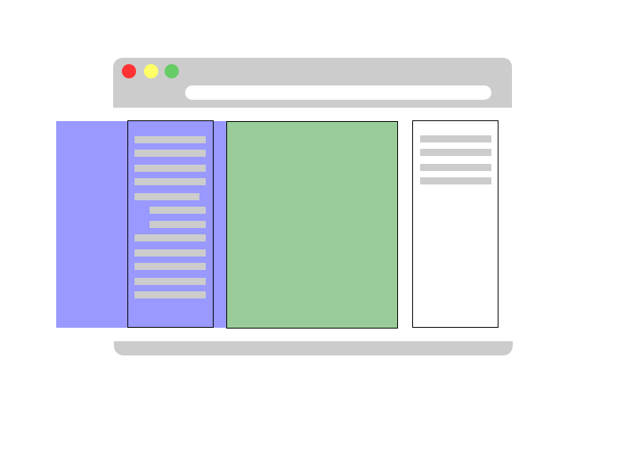
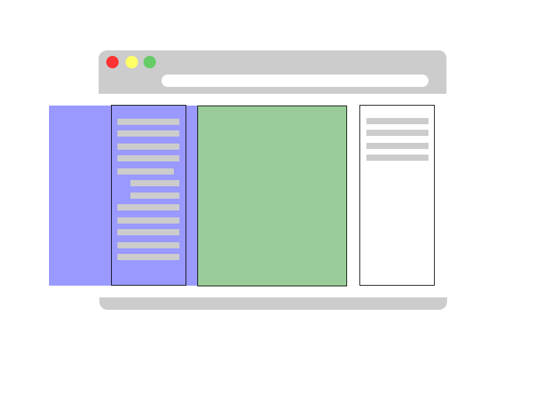
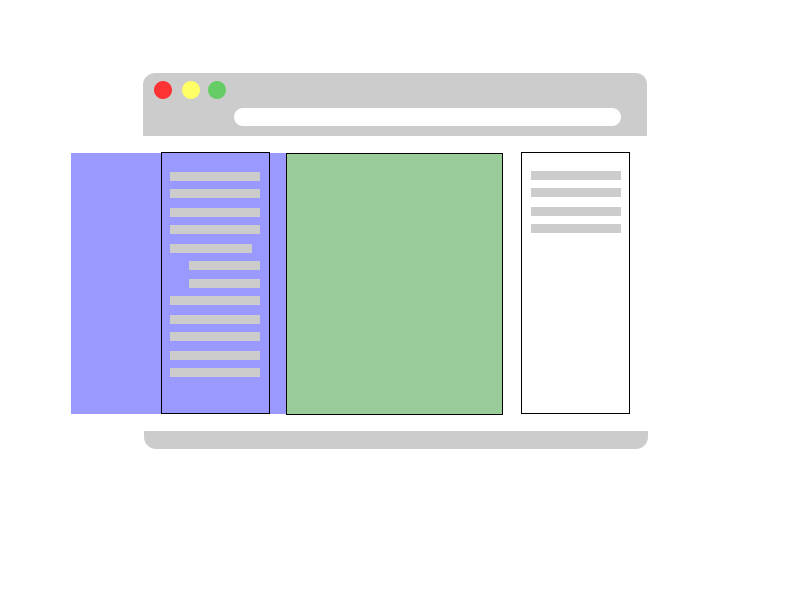

Hugmyndin hér er að vera með einhverskonar entry í container, þegar beðið er um edit form fyrir þetta entry, er formið sótt með AJAX, því stungið í container við hliðina, entry'inu er ýtt út af skánum til vinstri og formið slide'ar inn.
Til að þetta sé hægt, þarf að nota ákveðið markup
<div id="parent">
<div role="tabpanel">
<div role="tablist">
<div role="tab">Entry container</div>
<div role="tab">Form container</div>
</div>
</div>
</div>

Allur galdurinn á sér svo stað í JavaScript flækju. Það þarf að breyta markup'inu í JavaScript Widget sem hefur svo API sem hægt er að nota til að stjórna hegðunni.
var widget = new EditWidget( document.getElementById('parent') );
//set to edit mode, will slide to left
widget.editMode();
//set back to display mode, slide to right
widget.displayMode();
//set content in entry panel
widget.entryPanel().innerHTML = '<div></div>';
//set content in form panel
widget.formPanel().innerHTML = '<div></div>';
//set in preload mode
widget.preloadMode(true);
//disable preload mode
widget.preloadMode(false);
Hér kemur svo einfalt dæmi (sauðarkóði). AJAX kall er gert á server, þegar svarið kemur er forminu, stungið inn í viðeigandi panel og Widget API'inn er notaður til að uppfæra display'ið. Þegar forminu er submit'að er display'ið lagað aftur.
var widget = new EditWidget( document.getElementById('parent') );
var xhr = new XMLHttpRequest();
xml.onload = function(form-data){
widget.formPanel().innerHTML = form-data;
widget.editMode();
form-data.submit = function(entry-data){
widget.entryPanel().innerHTML = entry-data;
widget.displayMode();
}
}